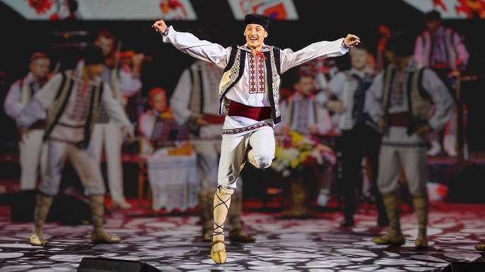

Cultura Moldovei
Cultura Moldovei este un amestec unic de tradiții, obiceiuri și influențe, reflectând istoria complexă a regiunii. Având o identitate distinctă, dar și multe asemănări cu alte culturi din Europa de Est, în special cu cele ale țărilor vecine (România, Ucraina, Rusia), cultura moldovenească este marcată de tradiții populare, artizanat, muzică, dans și literatură. Iată câteva dintre aspectele esențiale ale culturii Moldovei:
1. Tradiții și obiceiuri
Moldova are o varietate de obiceiuri și tradiții populare, multe dintre ele fiind legate de ciclul agricol, religie și familie. Aceste obiceiuri se regăsesc în sărbători, în muzică și dans, dar și în meșteșugurile tradiționale. Sărbători tradiționale: Cele mai importante sărbători sunt Crăciunul și Paștele, celebrate în mod similar cu restul țărilor ortodoxe, dar și alte sărbători precum „Mărțișorul” (1 martie), când se sărbătorește începutul primăverii, și „Săptămâna Luminată” (Sărbători Pascale). Nunțile și botezurile: Aceste evenimente sunt însoțite de tradiții vechi, muzică populară și dansuri, iar mesele sunt bogate și pline de preparate tradiționale.2. Muzică și Dans
Muzica și dansul sunt aspecte fundamentale ale culturii moldovenești. Folclorul moldovenesc este extrem de diversificat, având influențe din Balcani, dar și din alte culturi din regiune. Muzica tradițională: Este caracterizată de utilizarea unor instrumente tradiționale precum fluierul, cobza, țambalul și vioara. Melodiile sunt adesea ritmate și folosite în dansurile populare, ca sârba, hora sau „bătuta”. Dansuri tradiționale: Sârba, hora și alte dansuri tradiționale participă substanțial la cultura moldovenească, fiind dansuri de grup, cu pași specifici, care simbolizează unitatea și bucuria colectivă.3. Literatura
- Literatura moldovenească a fost influențată de limba și tradițiile românești, dar și de regimul sovietic. Scriitorii moldoveni au reflectat în lucrările lor istoria tumultoasă a regiunii, conflictele identitare și dorința de independență.
- Scriitori importanți: Ion Creangă și Mihai Eminescu sunt autori de referință în cultura moldovenească, iar alții precum Alexandru Donici, Grigore Vieru sau Nicolae Dabija sunt renumiți pentru operele lor.
- Poetica populară: Poezia populară, cu influențe din folclor, este foarte apreciată în Moldova. Mulți dintre scriitori au fost inspirați de viața rurală, tradițiile și peisajul natural.
4. Meșteșuguri și Artizanat
- Moldova are o tradiție puternică în meșteșugurile populare, care sunt continuate și astăzi. În zonele rurale, meșteșugarii creează obiecte de artizanat, lucruri utile și decorative, care sunt adesea realizate manual. Țesutul și broderia: Folclorul moldovenesc se reflectă în țesăturile tradiționale, cum ar fi covoarele, stindardele și hainele brodate, care au modele specifice, simbolice și unice. Ceramica: Olăritul este un alt meșteșug tradițional important în Moldova, cu olarii care creează vase și obiecte decorative din lut, cu forme și motive inspirate din natură și viața de zi cu zi.
5. Arhitectura
Arhitectura tradițională din Moldova este influențată de stilul românesc, dar și de influențele bizantine și otomane, reflectând diversitatea culturală a regiunii. Bisericile și mănăstirile: Mănăstirile medievale, cu fresce și icoane specifice ortodoxiei, sunt o parte importantă a peisajului cultural al Moldovei. Mănăstirea Căpriana și Mănăstirea Saharna sunt exemple remarcabile. Casele tradiționale: Casele moldovenești sunt realizate din lemn sau piatră, cu acoperișuri de țiglă, iar curțile sunt adesea îngrijite cu grădini și livezi.6. Gastronomia
Gastronomia moldovenească este un amestec de influențe din România, Ucraina, Rusia și alte culturi din Balcani. Mâncărurile sunt adesea pregătite cu ingrediente locale, iar mesele sunt destul de bogate. Preparatele tradiționale: Plăcinte cu brânză, varză sau carne, „sarmale” (sarmale cu varză sau foi de viță), „mămăligă” cu brânză și smântână, „ciorbă de burtă” și „zama” sunt doar câteva dintre mâncărurile specifice. De asemenea, vinul este o băutură importantă, Moldova fiind renumită pentru tradiția viticolă.7. Religia
Majoritatea populației din Moldova este de religie ortodoxă, iar religia joacă un rol important în viața cotidiană. Bisericile sunt locuri de adunare nu doar pentru slujbe religioase, dar și pentru diverse evenimente sociale și comunitare.Mai jos puteți găsi câteva imagini care ilustrează diversitatea culturală a Moldovei:
